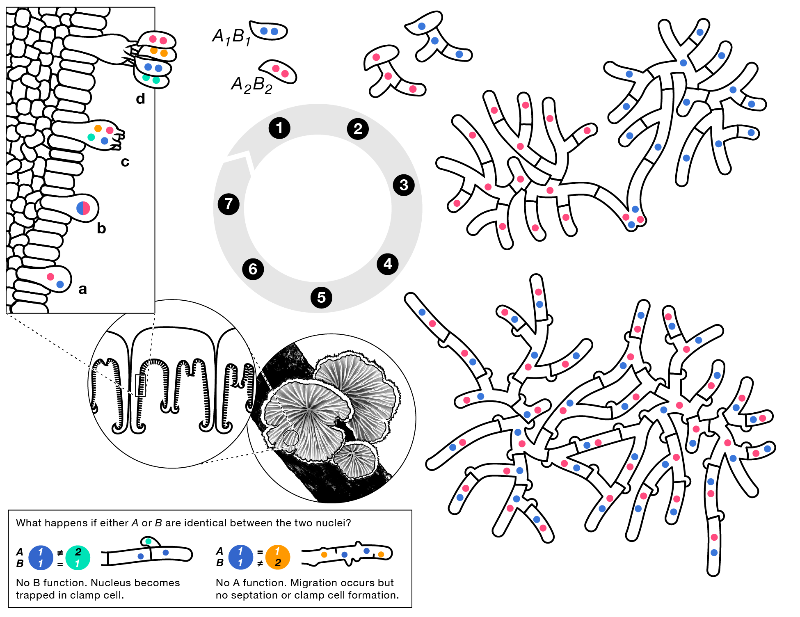

Research Interests
I am a mycologist and evolutionary biologist interested in the evolution and maintenance of sexual reproduction, genomic organization, and how symbiotic interactions like mutualism and parasitism affect genetic variation. I am particularly interested in studying these phenomena in basidiomycete fungi, which spend a long portion of their life as dikaryons, where each cell contains two (often) genetically distinct haploid nuclei. This life history trait allows us to ask unique questions about cell idenity, genomic conflict, and ploidy such as:
- Are dikaryotic cells equivalent to diploid cells?
- How do nuclei sense their ploidy and what signals or properties lead to karyogamy?
- How is transcription coordinated between nuclei in a cell? Are some nuclei silent?
- What are the evolutionary pressures that drive the separation of plasmogamy (cell fusion) and karyogamy (nuclear fusion)?

The lifecycle of Schizophyllum commune, showing a prolonged dikaryotic stage (4). The nuclei only fuse in the basidospore producing cells in the mushroom (7). A and B refer to mating types, which control the ability of monokaryons (2) to form dikaryons with each other. Illustration by Sarah Friedrich, from Young and Pringle (2026).